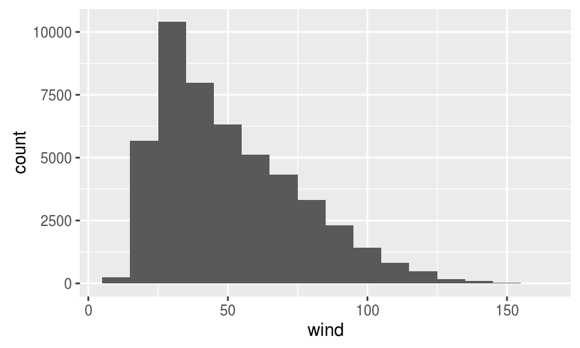
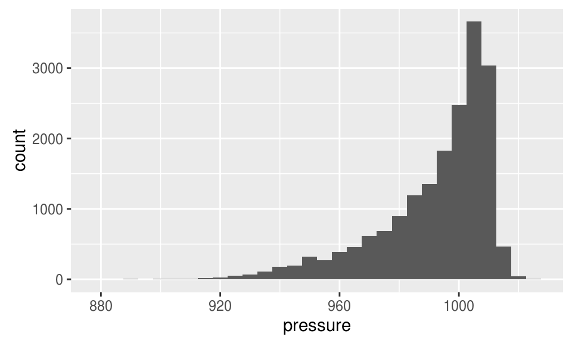
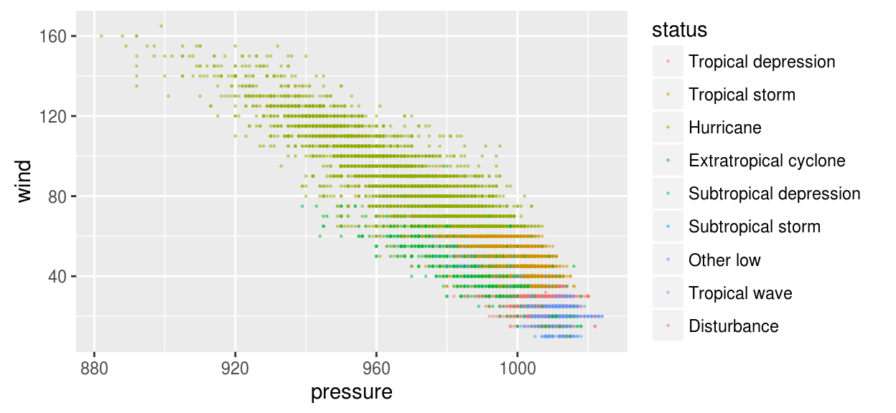
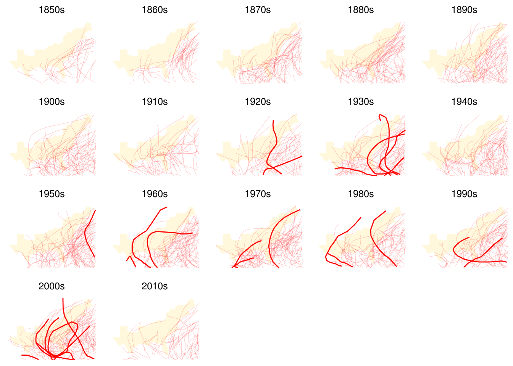
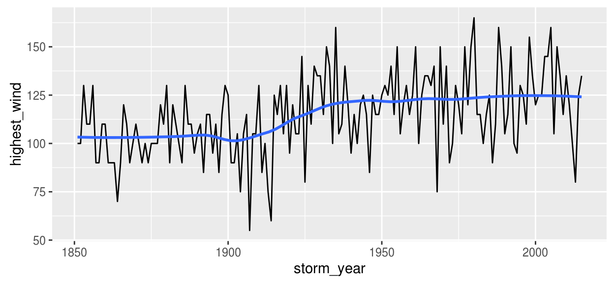
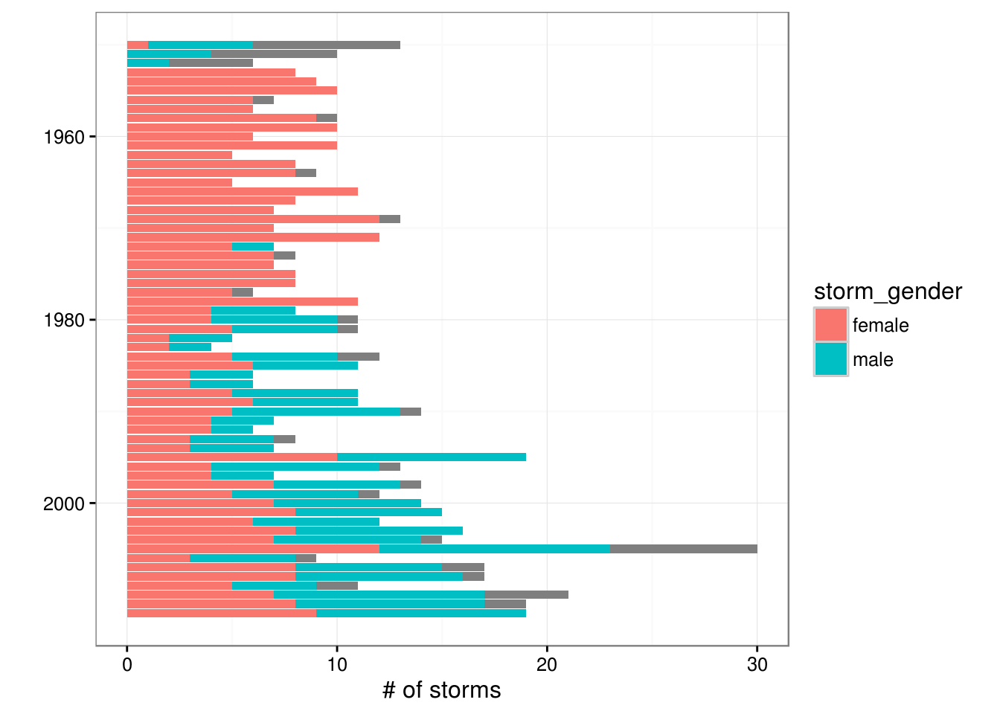
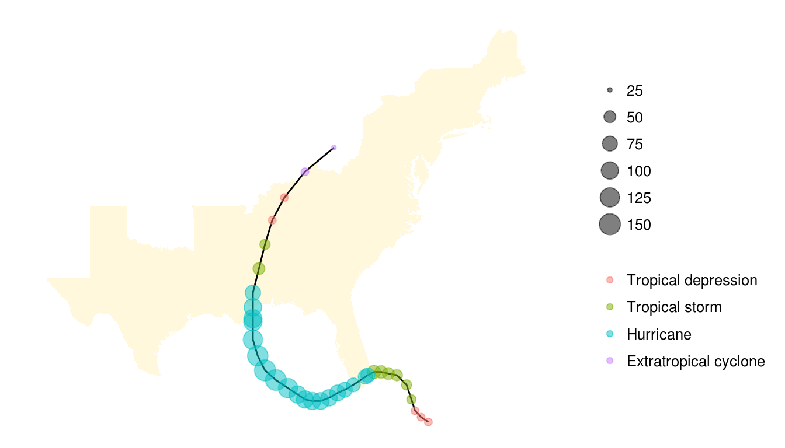
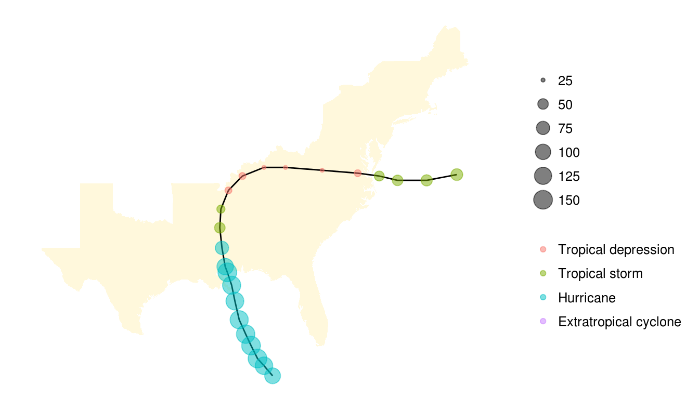
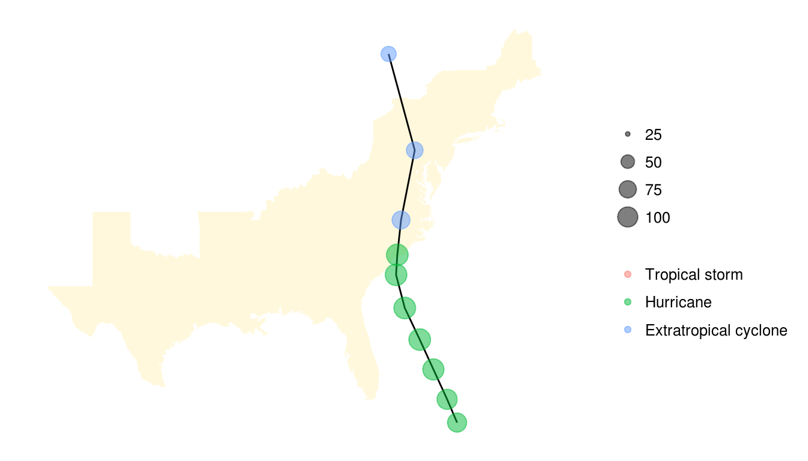

Chapter 10 Entering and cleaning data #3
Download a pdf of the lecture slides covering this topic.
10.1 Cleaning very messy data
10.1.1 Example of messy data
One version of Atlantic basin hurricane tracks is available here: http://www.nhc.noaa.gov/data/hurdat/hurdat2-1851-2015-070616.txt. The data is not in a classic delimited format:

This data is formatted in the following way:
- Data for many storms are included in one file.
- Data for a storm starts with a shorter line, with values for the storm ID, name, and number of observations for the storm. These values are comma separated.
- Observations for each storm are longer lines. There are multiple observations for each storm, where each observation gives values like the location and maximum winds for the storm at that time.
10.1.2 Strategy for messy data
Because the hurricane tracking data is not nicely formatted, you can’t use read_csv or similar functions to read it in. Here is a strategy for reading in very messy data:
- Read in all lines individually.
- Use regular expressions to split each line into the elements you’d like to use to fill columns.
- Write functions, loops, or
applycalls to process lines and use the contents to fill a data frame. - Once you have the data in a data frame, do any remaining cleaning to create a data frame that is easy to use to answer research questions.
10.1.3 readLines function
The readLines function allows you to read a text file in one line at a time. You can then write code and functions to parse the file one line at a time, to turn it into a dataframe you can use.
The readLines function will read in lines from a text file directly, without trying to separate into columns. You can use the n argument to specify the number of lines to read it.
For example, to read in three lines from the hurricane tracking data, you can run:
tracks_url <- paste0("http://www.nhc.noaa.gov/data/hurdat/",
"hurdat2-1851-2015-070616.txt")
hurr_tracks <- readLines(tracks_url, n = 3)
hurr_tracks## [1] "AL011851, UNNAMED, 14,"
## [2] "18510625, 0000, , HU, 28.0N, 94.8W, 80, -999, -999, -999, -999, -999, -999, -999, -999, -999, -999, -999, -999, -999,"
## [3] "18510625, 0600, , HU, 28.0N, 95.4W, 80, -999, -999, -999, -999, -999, -999, -999, -999, -999, -999, -999, -999, -999,"The data has been read in as a vector, rather than a dataframe:
class(hurr_tracks)## [1] "character"length(hurr_tracks)## [1] 3hurr_tracks[1]## [1] "AL011851, UNNAMED, 14,"10.1.4 Regular expressions for cleaning
You can use regular expressions to break each line up. For example, you can use str_split from the stringr package to break the first line of the hurricane track data into its three separate components:
library(stringr)
str_split(hurr_tracks[1], pattern = ",")## [[1]]
## [1] "AL011851" " UNNAMED" " 14"
## [4] ""You can use this to create a list where each element of the list has the split-up version of a line of the original data. First, read in all of the data:
tracks_url <- paste0("http://www.nhc.noaa.gov/data/hurdat/",
"hurdat2-1851-2015-070616.txt")
hurr_tracks <- readLines(tracks_url)
length(hurr_tracks)## [1] 5091910.1.5 Working with lists
Next, use lapply with str_split to split each line of the data at the commas:
hurr_tracks <- lapply(hurr_tracks, str_split,
pattern = ",",
simplify = TRUE)
hurr_tracks[[1]]## [,1] [,2] [,3] [,4]
## [1,] "AL011851" " UNNAMED" " 14" ""hurr_tracks[[2]][1:2]## [1] "18510625" " 0000"Next, you want to split this list into two lists, one with the shorter “meta-data” lines and one with the longer “observation” lines. You can use sapply to create a vector with the length of each line. You will later use this to identify which lines are short or long.
hurr_lengths <- sapply(hurr_tracks, length)
hurr_lengths[1:17]## [1] 4 21 21 21 21 21 21 21 21 21 21 21 21 21 21 4 21unique(hurr_lengths)## [1] 4 21You can use bracket indexing to split the hurr_tracks into two lists: one with the shorter lines that start each observation (hurr_meta) and one with the storm observations (hurr_obs). Use bracket indexing with the hurr_lengths vector you just created to make that split.
hurr_meta <- hurr_tracks[hurr_lengths == 4]
hurr_obs <- hurr_tracks[hurr_lengths == 21]hurr_meta[1:3]## [[1]]
## [,1] [,2] [,3] [,4]
## [1,] "AL011851" " UNNAMED" " 14" ""
##
## [[2]]
## [,1] [,2] [,3] [,4]
## [1,] "AL021851" " UNNAMED" " 1" ""
##
## [[3]]
## [,1] [,2] [,3] [,4]
## [1,] "AL031851" " UNNAMED" " 1" ""hurr_obs[1:2]## [[1]]
## [,1] [,2] [,3] [,4] [,5] [,6] [,7] [,8]
## [1,] "18510625" " 0000" " " " HU" " 28.0N" " 94.8W" " 80" " -999"
## [,9] [,10] [,11] [,12] [,13] [,14] [,15] [,16]
## [1,] " -999" " -999" " -999" " -999" " -999" " -999" " -999" " -999"
## [,17] [,18] [,19] [,20] [,21]
## [1,] " -999" " -999" " -999" " -999" ""
##
## [[2]]
## [,1] [,2] [,3] [,4] [,5] [,6] [,7] [,8]
## [1,] "18510625" " 0600" " " " HU" " 28.0N" " 95.4W" " 80" " -999"
## [,9] [,10] [,11] [,12] [,13] [,14] [,15] [,16]
## [1,] " -999" " -999" " -999" " -999" " -999" " -999" " -999" " -999"
## [,17] [,18] [,19] [,20] [,21]
## [1,] " -999" " -999" " -999" " -999" ""10.1.6 Converting to dataframes
Now, you can use bind_rows from dplyr to change the list of metadata into a dataframe. (You first need to use as_tibble with lapply to convert all elements of the list from matrices to dataframes.)
library(dplyr)
hurr_meta <- lapply(hurr_meta, tibble::as_tibble)
hurr_meta <- bind_rows(hurr_meta)
hurr_meta %>%
slice(1:3)## # A tibble: 3 × 4
## V1 V2 V3 V4
## <chr> <chr> <chr> <chr>
## 1 AL011851 UNNAMED 14
## 2 AL021851 UNNAMED 1
## 3 AL031851 UNNAMED 1You can clean up the data a bit more.
- First, the fourth column doesn’t have any non-missing values, so you can get rid of it:
unique(hurr_meta$V4)## [1] ""- Second, the second and third columns include a lot of leading whitespace:
hurr_meta$V2[1:2]## [1] " UNNAMED" " UNNAMED"- Last, we want to name the columns.
hurr_meta <- hurr_meta %>%
dplyr::select(-V4) %>%
dplyr::rename(storm_id = V1, storm_name = V2, n_obs = V3) %>%
dplyr::mutate(storm_name = str_trim(storm_name),
n_obs = as.numeric(n_obs))
hurr_meta %>% slice(1:3)## # A tibble: 3 × 3
## storm_id storm_name n_obs
## <chr> <chr> <dbl>
## 1 AL011851 UNNAMED 14
## 2 AL021851 UNNAMED 1
## 3 AL031851 UNNAMED 1Now you can apply the same idea to the hurricane observations. First, we’ll want to add storm identifiers to that data. The “meta” data includes storm ids and the number of observations per storm. We can take advantage of that to make a storm_id vector that will line up with the storm observations.
storm_id <- rep(hurr_meta$storm_id, times = hurr_meta$n_obs)
head(storm_id, 3)## [1] "AL011851" "AL011851" "AL011851"length(storm_id)## [1] 49105length(hurr_obs)## [1] 49105hurr_obs <- lapply(hurr_obs, tibble::as_tibble)
hurr_obs <- dplyr::bind_rows(hurr_obs) %>%
dplyr::mutate(storm_id = storm_id)
hurr_obs %>% dplyr::select(V1, V2, V5, V6, storm_id) %>% slice(1:3)## # A tibble: 3 × 5
## V1 V2 V5 V6 storm_id
## <chr> <chr> <chr> <chr> <chr>
## 1 18510625 0000 28.0N 94.8W AL011851
## 2 18510625 0600 28.0N 95.4W AL011851
## 3 18510625 1200 28.0N 96.0W AL011851To finish, you just need to clean up the data. Now that the data is in a dataframe, this process is inline with what you’ve been doing with dplyr and related packages.
The “README” file for the hurricane tracking data is useful at this point:
http://www.nhc.noaa.gov/data/hurdat/hurdat2-format-atlantic.pdf
First, say you only want some of the columns for a study you are doing. You can use select to clean up the dataframe by limiting it to columns you need.
If you only need date, time, storm status, location (latitude and longitude), maximum sustained winds, and minimum pressure, then you can run:
hurr_obs <- hurr_obs %>%
dplyr::select(V1, V2, V4:V8, storm_id) %>%
dplyr::rename(date = V1, time = V2, status = V4, latitude = V5,
longitude = V6, wind = V7, pressure = V8)
hurr_obs %>% slice(1:3) %>%
dplyr::select(date, time, status, latitude, longitude)## # A tibble: 3 × 5
## date time status latitude longitude
## <chr> <chr> <chr> <chr> <chr>
## 1 18510625 0000 HU 28.0N 94.8W
## 2 18510625 0600 HU 28.0N 95.4W
## 3 18510625 1200 HU 28.0N 96.0WNext, the first two columns give the date and time. You can unite these and then convert them to a Date-time class.
library(tidyr)
library(lubridate)
hurr_obs <- hurr_obs %>%
tidyr::unite(date_time, date, time) %>%
dplyr::mutate(date_time = ymd_hm(date_time))
hurr_obs %>% slice(1:3) %>%
dplyr::select(date_time, status, latitude, longitude)## # A tibble: 3 × 4
## date_time status latitude longitude
## <dttm> <chr> <chr> <chr>
## 1 1851-06-25 00:00:00 HU 28.0N 94.8W
## 2 1851-06-25 06:00:00 HU 28.0N 95.4W
## 3 1851-06-25 12:00:00 HU 28.0N 96.0WNext, you can change status to a factor and give the levels more meaningful names:
unique(hurr_obs$status)## [1] " HU" " TS" " EX" " TD" " LO" " DB" " SD" " SS" " WV"storm_levels <- c("TD", "TS", "HU", "EX",
"SD", "SS", "LO", "WV", "DB")
storm_labels <- c("Tropical depression", "Tropical storm",
"Hurricane", "Extratropical cyclone",
"Subtropical depression",
"Subtropical storm", "Other low",
"Tropical wave", "Disturbance")
hurr_obs <- hurr_obs %>%
dplyr::mutate(status = factor(str_trim(status),
levels = storm_levels,
labels = storm_labels))Now, you can clean up the latitude and longitude. Ultimately, we’ll want numeric values for those so we can use them for mapping. You can use regular expressions to separate the numeric and non-numeric parts of these columns. For example:
head(str_extract(hurr_obs$latitude, "[A-Z]"))## [1] "N" "N" "N" "N" "N" "N"head(str_extract(hurr_obs$latitude, "[^A-Z]+"))## [1] " 28.0" " 28.0" " 28.0" " 28.1" " 28.2" " 28.2"Use this idea to split the numeric latitude from the direction of that latitude:
hurr_obs <- hurr_obs %>%
dplyr::mutate(lat_dir = str_extract(latitude, "[A-Z]"),
latitude = as.numeric(str_extract(latitude, "[^A-Z]+")),
lon_dir = str_extract(longitude, "[A-Z]"),
longitude = as.numeric(str_extract(longitude, "[^A-Z]+")))Now these elements are in separate columns:
hurr_obs %>%
dplyr::select(latitude, lat_dir, longitude, lon_dir) %>%
dplyr::slice(1:2)## # A tibble: 2 × 4
## latitude lat_dir longitude lon_dir
## <dbl> <chr> <dbl> <chr>
## 1 28 N 94.8 W
## 2 28 N 95.4 Wunique(hurr_obs$lat_dir)## [1] "N"unique(hurr_obs$lon_dir)## [1] "W" "E"If we’re looking at US impacts, we probably only need observations from the western hemisphere, so let’s filter out other values:
hurr_obs <- hurr_obs %>%
dplyr::filter(lon_dir == "W")Next, clean up the wind column:
unique(hurr_obs$wind)[1:5]## [1] " 80" " 70" " 60" " 50" " 40"hurr_obs <- hurr_obs %>%
dplyr::mutate(wind = ifelse(wind == " -99", NA, as.numeric(wind)))Check the cleaned measurements:
library(ggplot2)
ggplot(hurr_obs, aes(x = wind)) +
geom_histogram(binwidth = 10)
Clean and check air pressure measurements in the same way:
head(unique(hurr_obs$pressure))## [1] " -999" " 961" " 924" " 938" " 950" " 997"hurr_obs <- hurr_obs %>%
dplyr::mutate(pressure = ifelse(pressure == " -999", NA,
as.numeric(pressure)))ggplot(hurr_obs, aes(x = pressure)) +
geom_histogram(binwidth = 5)
Check some of the very low pressure measurements:
hurr_obs %>% dplyr::arrange(pressure) %>%
dplyr::select(date_time, wind, pressure) %>% slice(1:5)## # A tibble: 5 × 3
## date_time wind pressure
## <dttm> <dbl> <dbl>
## 1 2005-10-19 12:00:00 160 882
## 2 1988-09-14 00:00:00 160 888
## 3 1988-09-14 06:00:00 155 889
## 4 1935-09-03 00:00:00 160 892
## 5 1935-09-03 02:00:00 160 89210.1.7 Exploring the hurricane tracking data
Explore pressure versus wind speed, by storm status:
ggplot(hurr_obs, aes(x = pressure, y = wind,
color = status)) +
geom_point(size = 0.2, alpha = 0.4) 
Next, we want to map storms by decade. Add hurricane decade:
hurr_obs <- hurr_obs %>%
dplyr::mutate(decade = substring(year(date_time), 1, 3),
decade = paste0(decade, "0s"))
unique(hurr_obs$decade)## [1] "1850s" "1860s" "1870s" "1880s" "1890s" "1900s" "1910s" "1920s"
## [9] "1930s" "1940s" "1950s" "1960s" "1970s" "1980s" "1990s" "2000s"
## [17] "2010s"Add logical for whether the storm was ever category 5:
hurr_obs <- hurr_obs %>%
dplyr::group_by(storm_id) %>%
dplyr::mutate(cat_5 = max(wind) >= 137) %>%
dplyr::ungroup()To map the hurricane tracks, you need a base map to add the tracks to. Pull data to map hurricane-prone states:
east_states <- c("florida", "georgia", "south carolina",
"north carolina", "virginia", "maryland",
"delaware", "new jersey", "new york",
"connecticut", "massachusetts",
"rhode island", "vermont", "new hampshire",
"maine", "pennsylvania", "west virginia",
"tennessee", "kentucky", "alabama",
"arkansas", "texas", "mississippi",
"louisiana")
east_us <- map_data("state", region = east_states)Plot tracks over a map of hurricane-prone states. Add thicker lines for storms that were category 5 at least once in their history.
ggplot(east_us, aes(x = long, y = lat, group = group)) +
geom_polygon(fill = "cornsilk", color = "cornsilk") +
theme_void() +
xlim(c(-108, -65)) + ylim(c(23, 48)) +
geom_path(data = hurr_obs,
aes(x = -longitude, y = latitude,
group = storm_id),
color = "red", alpha = 0.2, size = 0.2) +
geom_path(data = filter(hurr_obs, cat_5),
aes(x = -longitude, y = latitude,
group = storm_id),
color = "red") +
facet_wrap(~ decade)Check trends in maximum wind recorded in any observation each year:

Maximum wind observed each year:
hurr_obs %>%
dplyr::mutate(storm_year = year(date_time)) %>%
dplyr::group_by(storm_year) %>%
dplyr::summarize(highest_wind = max(wind, na.rm = TRUE)) %>%
ggplot(aes(x = storm_year, y = highest_wind)) +
geom_line() + geom_smooth(se = FALSE, span = 0.5)
There is an R package named gender that predicts whether a name is male or female based on historical data:
This package uses one of several databases of names (here, we’ll use Social Security Administration data), inputs a year or range of years, and outputs whether a name in that year was more likely female or male.
We can apply a function from this package across all the named storms to see how male / female proportions changed over time.
First, install the package (as wll as genderdata, which is required to use the package). Once you do, you can use gender to determine the most common gender associated with a name in a given year or range of years:
# install.packages("gender")
# install.packages("genderdata", type = "source",
# repos = "http://packages.ropensci.org")
library(gender)
gender("KATRINA", years = 2005)[ , c("name", "gender")]## # A tibble: 1 × 2
## name gender
## <chr> <chr>
## 1 KATRINA femaleTo apply this function across all our storms, it helps if we write a small function that “wraps” the gender function and outputs exactly (and only) what we want, in the format we want:
get_gender <- function(storm_name, storm_year){
storm_gender <- gender(names = storm_name,
years = storm_year,
method = "ssa")$gender
if(length(storm_gender) == 0) storm_gender <- NA
return(storm_gender)
}Now we can use mapply with this wrapper function to apply it across all our named storms:
hurr_genders <- hurr_meta %>%
dplyr::filter(storm_name != "UNNAMED") %>%
dplyr::mutate(storm_year = substring(storm_id, 5, 8),
storm_year = as.numeric(storm_year)) %>%
dplyr::filter(1880 <= storm_year & storm_year <= 2012) %>%
dplyr::select(storm_name, storm_year, storm_id) %>%
dplyr::mutate(storm_gender = mapply(get_gender,
storm_name = storm_name,
storm_year = as.numeric(storm_year)))Now, plot a bar chart with the number of male, female, and unclear storms each year:
hurr_genders %>%
dplyr::group_by(storm_year, storm_gender) %>%
dplyr::summarize(n = n()) %>%
ggplot(aes(x = storm_year, y = n, fill = storm_gender)) +
geom_bar(stat = "identity") +
coord_flip() +
scale_x_reverse() +
theme_bw() +
xlab("") + ylab("# of storms")
Next, you can write a function to plot the track for a specific storm. You’ll want to be able to call the function by storm name and year, so join in the storm names from the hurr_meta dataset. We’ll exclude any “UNNAMED” storms.
hurr_obs <- hurr_obs %>%
dplyr::left_join(hurr_meta, by = "storm_id") %>%
dplyr::filter(storm_name != "UNNAMED") %>%
dplyr::mutate(storm_year = year(date_time))Next, write a function to plot the track for a single storm. Use color to show storm status and size to show wind speed.
map_track <- function(storm, year, map_data = east_us,
hurr_data = hurr_obs){
to_plot <- hurr_obs %>%
dplyr::filter(storm_name == toupper(storm) & storm_year == year)
out <- ggplot(east_us, aes(x = long, y = lat,
group = group)) +
geom_polygon(fill = "cornsilk") +
theme_void() +
xlim(c(-108, -65)) + ylim(c(23, 48)) +
geom_path(data = to_plot,
aes(x = -longitude, y = latitude,
group = NULL)) +
geom_point(data = to_plot,
aes(x = -longitude, y = latitude,
group = NULL, color = status,
size = wind), alpha = 0.5)
return(out)
}map_track(storm = "Katrina", year = "2005")
map_track(storm = "Camille", year = "1969")
map_track(storm = "Hazel", year = "1954")
You can also write code with readLines that will read, check, and clean each line, one line at a time.
con <- file("~/my_file.txt", open = "r")
while (length(single_line <-
readLines(con, n = 1,
warn = FALSE)) > 0) {
## Code to check and clean each line and
## then add it to "cleaned" data frame.
## Run operations on `single_line`.
}
close(con)This can be particularly useful if you’re cleaning a very big file, especially if there are many lines you don’t want to keep.
10.2 Pulling online data
10.2.1 APIs
API: “Application Program Interface”
An API provides the rules for software applications to interact. In the case of open data APIs, they provide the rules you need to know to write R code to request and pull data from the organization’s web server into your R session.
Often, an API can help you avoid downloading all available data, and instead only download the subset you need.
Strategy for using APIs from R:
- Figure out the API rules for HTTP requests
- Write R code to create a request in the proper format
- Send the request using GET or POST HTTP methods
- Once you get back data from the request, parse it into an easier-to-use format if necessary
Start by reading any documentation available for the API. This will often give information on what data is available and how to put together requests.

Source: https://api.nasa.gov/api.html#EONET
Many organizations will require you to get an API key and use this key in each of your API requests. This key allows the organization to control API access, including enforcing rate limits per user. API rate limits restrict how often you can request data (e.g., an hourly limit of 1,000 requests per user for NASA APIs).
You should keep this key private. In particular, make sure you do not include it in code that is posted to GitHub.
10.2.2 Example– riem package
The riem package, developed by Maelle Salmon and an ROpenSci package, is an excellent and straightforward example of how you can use R to pull open data through a web API.
This package allows you to pull weather data from airports around the world directly from the Iowa Environmental Mesonet.
To get a certain set of weather data from the Iowa Environmental Mesonet, you can send an HTTP request specifying a base URL, “https://mesonet.agron.iastate.edu/cgi-bin/request/asos.py/”, as well as some parameters describing the subset of dataset you want (e.g., date ranges, weather variables, output format).
Once you know the rules for the names and possible values of these parameters (more on that below), you can submit an HTTP GET request using the GET function from the httr package.

When you are making an HTTP request using the GET or POST functions from the httr package, you can include the key-value pairs for any query parameters as a list object in the query argurment of the function.
library(httr)
meso_url <- paste0("https://mesonet.agron.iastate.edu/",
"cgi-bin/request/asos.py/")
denver <- GET(url = meso_url,
query = list(station = "DEN", data = "sped",
year1 = "2016", month1 = "6",
day1 = "1", year2 = "2016",
month2 = "6", day2 = "30",
tz = "America/Denver",
format = "comma"))You can then use content from httr to retrieve the contents of the HTTP request. For this particular web data, the requested data is a comma-separated file, so you can convert it to a dataframe with read_csv:
denver %>% content() %>%
readr::read_csv(skip = 5, na = "M") %>%
slice(1:3)## # A tibble: 3 × 3
## station valid sped
## <chr> <dttm> <dbl>
## 1 DEN 2016-06-01 01:00:00 6.9
## 2 DEN 2016-06-01 01:05:00 6.9
## 3 DEN 2016-06-01 01:10:00 6.910.3 Example R API wrappers
10.3.1 rOpenSci
rOpenSci (https://ropensci.org):
“At rOpenSci we are creating packages that allow access to data repositories through the R statistical programming environment that is already a familiar part of the workflow of many scientists. Our tools not only facilitate drawing data into an environment where it can readily be manipulated, but also one in which those analyses and methods can be easily shared, replicated, and extended by other researchers.”
rOpenSci collects a number of packages for tapping into open data for research: https://ropensci.org/packages
Some examples (all descriptions from rOpenSci):
AntWeb: Access data from the world’s largest ant databasechromer: Interact with the chromosome counts database (CCDB)gender: Encodes gender based on names and dates of birthmusemeta: R Client for Scraping Museum Metadata, including The Metropolitan Museum of Art, the Canadian Science & Technology Museum Corporation, the National Gallery of Art, and the Getty Museum, and more to come.rusda: Interface to some USDA databaseswebchem: Retrieve chemical information from many sources. Currently includes: Chemical Identifier Resolver, ChemSpider, PubChem, and Chemical Translation Service.
For example, here is the description for the rnoaa package:
“Access climate data from NOAA, including temperature and precipitation, as well as sea ice cover data, and extreme weather events”
- Buoy data from the National Buoy Data Center
- Historical Observing Metadata Repository (HOMR))— climate station metadata
- National Climatic Data Center weather station data
- Sea ice data
- International Best Track Archive for Climate Stewardship (IBTrACS)— tropical cyclone tracking data
- Severe Weather Data Inventory (SWDI)
10.3.2 countyweather
The countyweather package wraps the rnoaa package to let you pull and aggregate weather at the county level in the U.S. For example, you can pull all data from Miami during Hurricane Andrew:

When you pull the data for a county, the package also maps the contributing weather stations:

10.3.3 USGS-R Packages
USGS has a very nice collection of R packages that wrap USGS open data APIs: https://owi.usgs.gov/R/
“USGS-R is a community of support for users of the R scientific programming language. USGS-R resources include R training materials, R tools for the retrieval and analysis of USGS data, and support for a growing group of USGS-R developers.”
USGS R packages include:
dataRetrieval: Obtain water quality sample data, streamflow data, and metadata directly from either the USGS or EPAEGRET: Analysis of long-term changes in water quality and streamflow, including the water-quality method Weighted Regressions on Time, Discharge, and Season (WRTDS)laketemps: Lake temperature data package for Global Lake Temperature Collaboration Projectlakeattributes: Common useful lake attribute datasoilmoisturetools: Tools for soil moisture data retrieval and visualization
10.3.4 US Census packages
A number of R packages help you access and use data from the U.S. Census:
tigris: Download and use Census TIGER/Line shapefiles in Racs: Download, manipulate, and present American Community Survey and Decennial data from the US CensusUSABoundaries: Historical and contemporary boundaries of the United States of Americaidbr: R interface to the US Census Bureau International Data Base API
For example, the tigris package allows you to pull spatial data for:
- Location boundaries
- States
- Counties
- Blocks
- Tracks
- School districts
- Congressional districts
- Roads
- Primary roads
- Primary and secondary roads
- Water
- Area-water
- Linear-water
- Coastline
- Other
- Landmarks
- Military
Example from: Kyle Walker. 2016. “tigris: An R Package to Access and Work with Geographic Data from the US Census Bureau”. The R Journal.

10.3.5 Other R API wrappers
Here are some examples of other R packages that faciliate use of an API for open data:
twitteR: TwitterQuandl: Quandl (financial data)RGoogleAnalytics: Google AnalyticsWDI,wbstats: World BankGuardianR,rdian: The Guardian Media GroupblsAPI: Bureau of Labor Statisticsrtimes: New York Times
10.3.6 R and APIs
Find out more about writing API packages with this vignette for the httr package: https://cran.r-project.org/web/packages/httr/vignettes/api-packages.html.
This document includes advice on error handling within R code that accesses data through an open API.
10.4 Parsing webpages
You can also use R to pull and clean web-based data that is not accessible through a web API or as an online flat file.
In this case, the strategy is:
- Pull in the full web page file (often in HTML or XML)
- Parse or clean the file within R (e.g., with regular expressions)
10.4.1 rvest
The rvest package should be the first thing you try if you need to pull and parse data from a webpage that is not a flat file.
This package allows you to read an HTML or XML file and pull out a certain element. Here is a very simple example of this parsing (this and later examples are from rvest documentation):
library(rvest)
read_html("<html><title>Hi<title></html>")## {xml_document}
## <html>
## [1] <head>\n <title>Hi<title/></title>\n</head>If you have an HTML or XML page you want to pull data from, you’ll first need to read the page:

library(rvest)
lego_movie <- read_html("http://www.imdb.com/title/tt1490017/")
lego_movie## {xml_document}
## <html xmlns:og="http://ogp.me/ns#" xmlns:fb="http://www.facebook.com/2008/fbml">
## [1] <head>\n <meta charset="utf-8"/>\n <meta http-equiv="X-UA-Compatib ...
## [2] <body><noscript>\n <link rel="stylesheet" type="text/css" ...Then you can use html_nodes and html_text to pull and parse just the elements you want:
rating_node <- lego_movie %>% html_nodes("strong span")
rating_node## {xml_nodeset (1)}
## [1] <span itemprop="ratingValue">7.8</span>rating <- rating_node %>%
html_text() %>% as.numeric()
rating## [1] 7.8You can pull and parse tables:
lego_movie %>%
html_nodes("table") %>% `[[`(1) %>%
html_table() %>% select(X2) %>% slice(2:8) ## X2
## 1 if (typeof uet == 'function') {\n uet("bb", "LargeTrailerWidget", {wb: 1});\n }\n Watch Trailer\n\n if (typeof uet == 'function') {\n uet("be", "LargeTrailerWidget", {wb: 1});\n }\n\n if (typeof uex == 'function') {\n uex("ld", "LargeTrailerWidget", {wb: 1});\n }\n\n\n0Check in \n X\n Beta\n I'm Watching This!\n \n Keep track of everything you watch; tell your friends.\n \n \n Error Please try again!\n Added to Your Check-Ins. View\n \n \n Check in\n\n \n \n \n \n\n0Share...\n X\n Share\n\n \n \n \n \n Facebook\n \n\n \n \n \n \n Twitter\n \n \n \n \n E-mail\n \n\n \n \n \n Check inThe only tricky part of this is figuring out which CSS selector you can use to pull a specific element of a webpage.
You can use “Selectorgadget” to help with this. Read the vignette for that tool here: ftp://cran.r-project.org/pub/R/web/packages/rvest/vignettes/selectorgadget.html
10.4.2 Scraping multiple pages
cities <- c("denver", "boulder", "fort-collins")
kitchen_addresses <- c()
for(i in 1:length(cities)){
restaurant_url <- paste0("http://thekitchen.com/the-kitchen-",
cities[i])
restaurant_page <- read_html(restaurant_url)
address <- restaurant_page %>%
html_nodes("p:nth-child(2)") %>% html_text()
kitchen_addresses[i] <- address[1]
}
kitchen_addresses## [1] "1530 16th Street (Entrance on Wazee Street)\nDenver, CO 80202"
## [2] "1039 Pearl St.,\nBoulder, CO 80302"
## [3] "100 North College Avenue\nFort Collins, CO 80524"library(ggmap)
library(stringr)
kitchen_latlons <- geocode(kitchen_addresses)for(i in 1:length(cities)){
city_map <- get_map(paste(gsub("-", " ", cities[i]),
"colorado"),
zoom = 14,
maptype = "roadmap")
city_map <- ggmap(city_map) +
geom_point(data = kitchen_latlons[i, ],
aes(x = lon, y = lat),
color = "red", size = 4, alpha = 0.4) +
theme_void() +
ggtitle(paste("The Kitchen in",
str_to_title(gsub("-", " ", cities[i]))))
print(city_map)
}